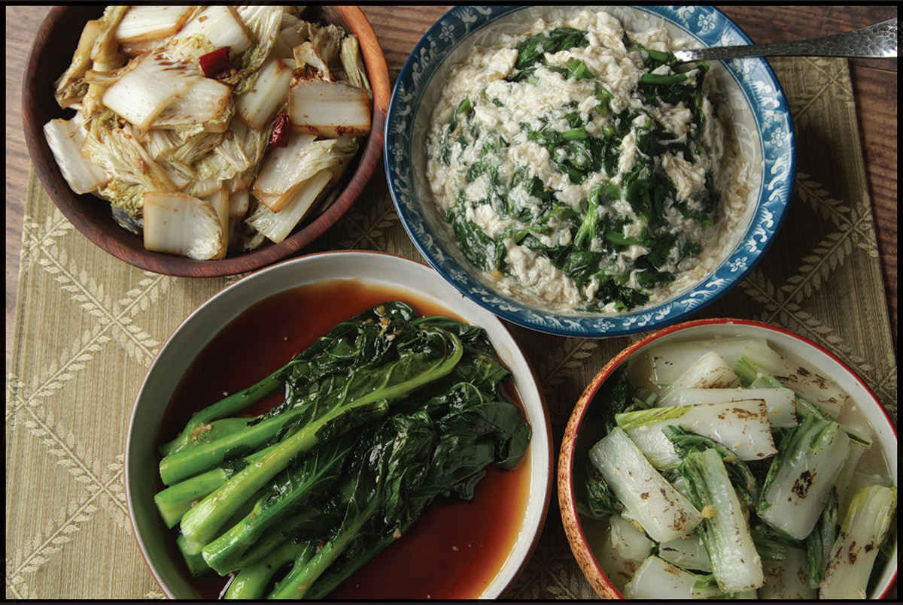
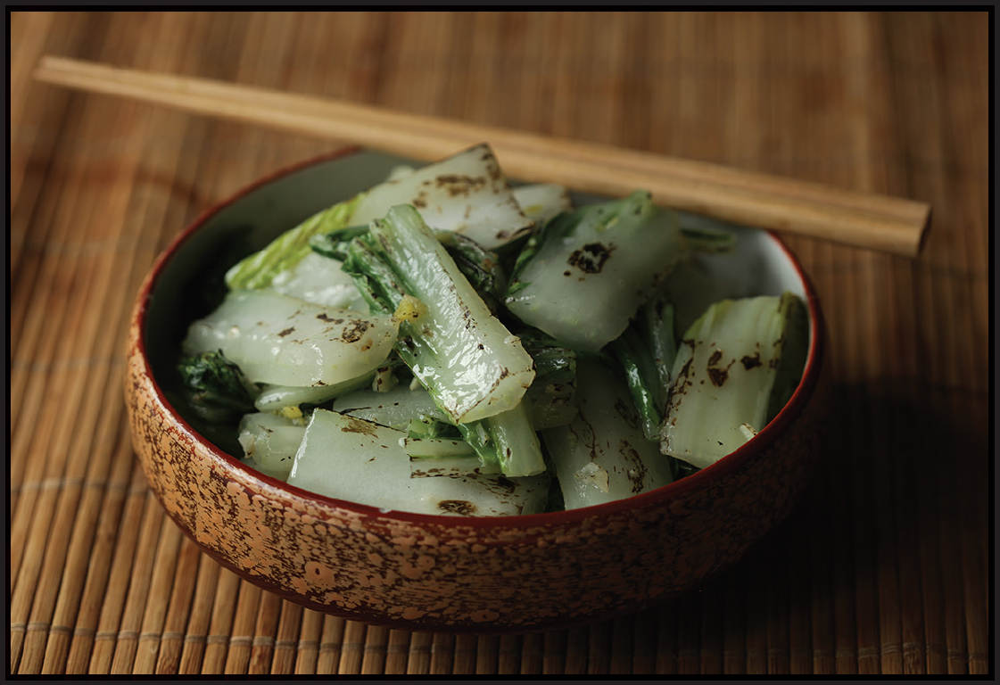
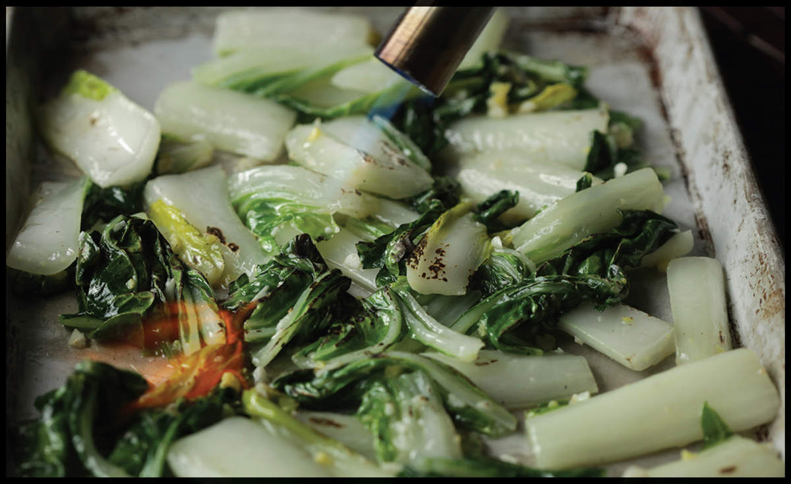

STIR-FRYING LEAFY GREEN VEGETABLES

Though meat consumption in Asia has been steadily increasing in recent years, vegetables still play a huge role in the regular diet of nearly every Asian country, and frequently that vegetable is some sort of simple stir-fried green, leafy vegetable. There is a wide range of flavor profiles and sauces that pair well with greens, but I’ll cover four of my favorite methods in the next section. If you’ve got these four techniques under your belt, you’re ready to tackle just about any greens the farmers’ market or supermarket can throw at you.
With each technique I’ll lay out the basics, tell you what types of greens it works best for from the table on the right, and give you a sample recipe to start with.
TYPE OF GREENS |
COMMON EXAMPLES |
Pale Green and Crunchy |
Napa cabbage, green cabbage, iceberg lettuce, escarole, romaine lettuce |
Leafy and Sweet |
Pea greens, fava bean greens, snow pea leaves, Chinese spinach (amaranth), spinach, Malabar spinach |
Leafy and Strong |
Mustard greens, watercress, AA choy, tatsoi, chrysanthemum greens, turnip greens, mizuna |
Stalky and Crunchy |
Broccolini, Chinese broccoli (gai lan), morning glory or water spinach (ong choy), bok choy and baby bok choy, yu choy, Chinese celery (kun choy), chard |

Stir-Fried Greens Technique 1: With Wok Hei, Garlic, and Ginger
What it works best with: Stalky and crunchy greens (such as gai lan, yu choy, or baby bok choy) or leafy and strong greens (such as tatsoi, watercress, or mustard greens)
SMOKY BOK CHOY WITH GARLIC SAUCE
|
Yield Serves 4 |
Active Time 15 minutes Total Time 15 minutes |
This recipe will work with any vegetables from the stalky and crunchy or the leafy and sweet categories in the chart on here. Vegetables should be trimmed of hard stems and cut into 2- to 3-inch segments. Wide vegetables like bok choy should be split lengthwise into halves or quarters. If you are not comfortable holding the torch while stir-frying, have a partner hold the torch for you or return the bok choy to the rimmed baking sheet after stir-frying for 30 seconds in step 4, spread into a single layer, place on a heatproof surface (like your range top), and sweep the torch back and forth over the bok choy until a smoky aroma reaches your nose, about 15 seconds. Return the bok choy to the wok and continue with step 5.
Wok hei, that smoky “breath of a wok” (see here) can go a long way toward livening up mildly flavored greens, and a simple garlicky glaze seasoned only with salt and white pepper accentuates the natural flavor of stalky greens or sweet leafy greens. If I’m not using my outdoor wok burner, I use my kitchen blowtorch to get smokiness into the greens. Transferring them to a tray to apply the torch makes it a simple and (relatively) safe operation that’s still fun to watch.
When blanching greens for stir-frying, add the tougher stalks to the water first to give them a jump start on cooking before adding the greens.
INGREDIENTS
For the Greens:
Kosher salt
12 ounces (340 g) bok choy, trimmed, each stalk split lengthwise, and cut into 2- to 3-inch pieces, leafy greens and white stalks washed and reserved separately (see Notes)
For the Cornstarch Slurry:
½ teaspoon (1.5 g) cornstarch
1 tablespoon (15 ml) water
For the Stir-Fry:
1 tablespoon (15 ml) peanut, rice bran, or other neutral oil
3 medium garlic cloves, minced (about 1 tablespoon/8 g)
2 teaspoons (10 g) minced fresh ginger (about ½-inch segment)
½ teaspoon (2 g) sugar
Pinch of freshly ground white pepper
DIRECTIONS
1For the Greens: Bring 1½ quarts lightly salted water to a boil in a wok. Add the bok choy stalks, stir well, cover, and boil, shaking the pan occasionally, for 30 seconds. Add the greens and boil, using a spider to move the greens around, until bright green but still crisp, about 15 seconds. Drain the bok choy and spread into a single layer on a sheet tray or large plate.
2For the Cornstarch Slurry: Combine the cornstarch and water in a separate small bowl and stir with a fork until the cornstarch is dissolved.
3For the Stir-Fry: Heat the wok over high heat until lightly smoking. Add the oil and swirl to coat. Add the garlic and ginger and stir-fry until fragrant but not browned, about 10 seconds.
4Immediately add the bok choy and stir-fry for 30 seconds. Working quickly, ignite your blowtorch and, holding the flame 2 to 3 inches above the vegetables, sweep across the surface while shaking the pan, until a smoky aroma reaches your nose, about 15 seconds. (You should hear a distinct crackle and see small bursts of orange flame as the oil on the vegetables jumps and combusts. See Notes.)
5Continue stir-frying until the vegetables are tender-crisp, about 30 seconds longer. Add the sugar and season with salt and white pepper to taste. Stir the cornstarch slurry and add it to the wok. Cook, tossing vigorously, until the vegetables are coated in a glossy glaze, about 15 seconds. Transfer to a serving platter and serve immediately with steamed white rice.
